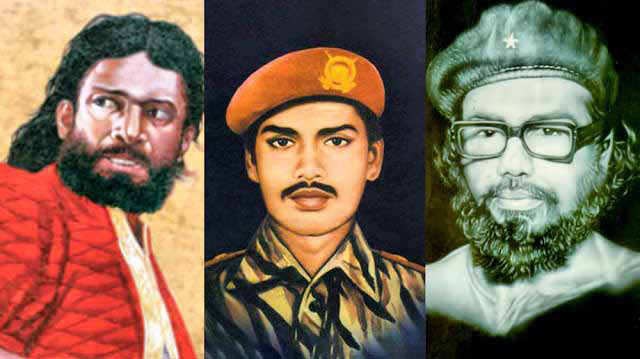
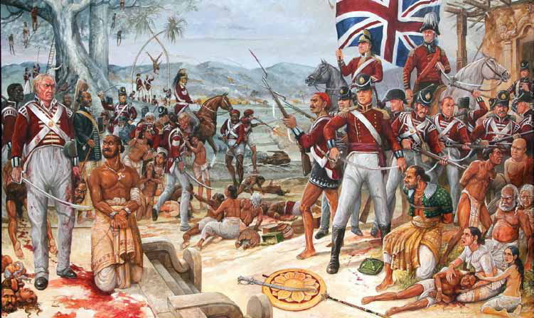
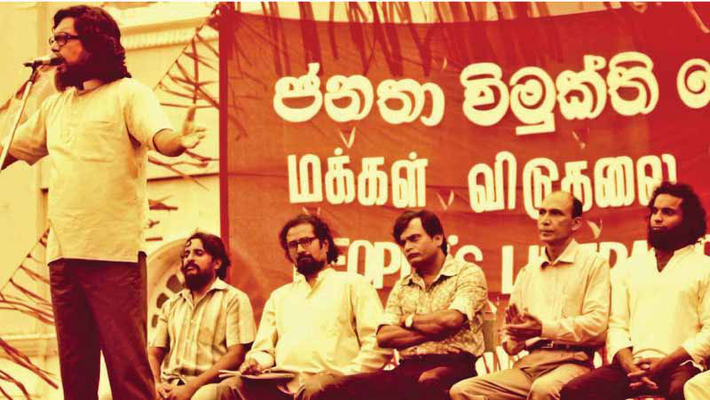
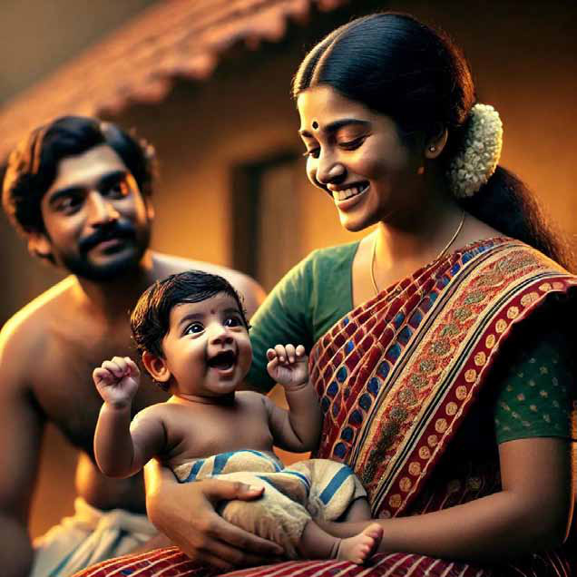
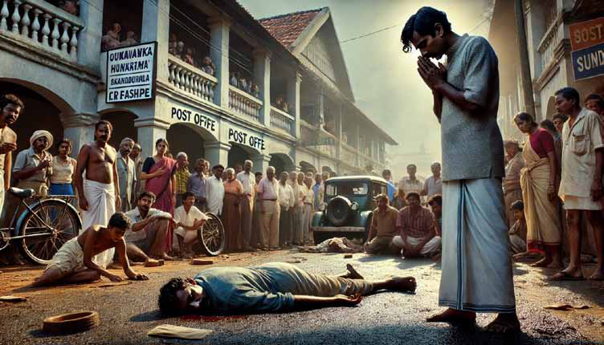
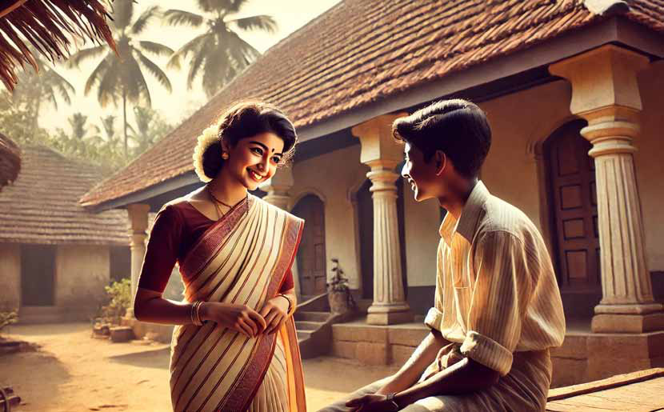

November: The Month of Heroes Keppetipola–Shankar–Wijeyweera
November: The Month of Heroes Keppetipola–Shankar–Wijeyweera
Jaffna Monitor hellojaffnamonitor@gmail.com 61 November: The Month of Heroes Keppetipola–Shankar–Wijeyweera I n the month of November, we might not have observed that three individuals are commemorated in Sri Lanka on remembrance days. The remembrance days of Keppetipola, Sankar, and Wijewira all happen to fall within this month. These three individuals share the commonality of having been killed in the struggle for liberation. Keppetipola can be seen as a martyr for Sinhala nationalism, Sankar for Tamil nationalism, and Wijewira for “internationalism.” On November 26 each year, Keppetipola’s remembrance day is observed, and in 2015, President Maithripala unveiled a statue in his honor on this day. Liberation Tigers fighter known as Lieutenant Sankar, or Selvachandran Sathiyanathan, sustained a fatal stomach injury in battle, passing away on November 27, 1982. By: Sarawanan Komathi Nadarasa

Jaffna Monitor hellojaffnamonitor@gmail.com 62 JVP leader Rohana Wijewira, who was in hiding, was captured at Ulapane and secretly shot and burned near the Borella Cemetery on November 13, 1989. In Sri Lanka’s history, heroes who fought against British rule and sacrificed their lives are often celebrated not as national heroes but primarily as Sinhala heroes. Key figures include those from the Uva Rebellion, such as Keppetipola (1818), Veera Puran Appu from the Matale Rebellion (1848), and Utuwankande Sura Saradiel (1864). These are among the most prominently celebrated figures. Sura Saradiel, famously known by the British as Sri Lanka’s Robin Hood, stole from the rich to aid the poor and was ultimately captured and executed for resisting British rule. Films and even television series in Sinhala have portrayed these three figures. Songs about Saradiel, sung by renowned artists like Jothipala and the recently deceased maestro Visharada Amaradeva, are also well known. Though more than two centuries have passed since Keppetipola’s execution, his annual remembrance day continues to be observed at his memorial, located in the courtyard of the Temple of the Sacred Tooth Relic (Dalada Maligawa) in Kandy, where he was beheaded. A few years ago, when Karuna Amman was arrested, Udaya Gammanpila held a press conference in protest, drawing a comparison to Keppetipola. He stated: “Karuna Amman is like our Keppetipola—a man who came from darkness into light, from the wrong side to the right side. He is one of the champions of the freedom we enjoy today.” This article is intended to explore the story of that very Keppetipola. In recent times, Sinhala nationalists have promoted “Veera Keppetipola” on a mass scale, often with underlying political motives. He is not merely remembered as a Sinhala freedom fighter against British colonialism; there is a narrative claiming that it was the Muslims who betrayed this heroic figure. This adds a layer

Jaffna Monitor hellojaffnamonitor@gmail.com 63 of significance that limits Keppetipola’s legacy, narrowing him to a hero celebrated solely by Sinhala Buddhists, rather than by all Sri Lankans. His remembrance day has thus been turned into a commemorative event tinged with ethnic sentiment. The rebellion he led is known in Sinhala as the “Uva-Wellassa Freedom Struggle” or the “Great Uprising of the Hill Country.” At the end of this struggle, the British captured, executed, imprisoned, or exiled 778 individuals as punishment. The last Sinhala king to rule Kandy was Sri Vira Parakrama Narendra Singha (1707-1739). Without an heir, he arranged for the crown to pass to the Nayakar dynasty through the brother of his queen, Sri Vijaya Rajasinha, who was brought from Madurai and ruled from 1739 to 1747. Following him, the Nayakar dynasty saw the reigns of Kirti Sri Rajasinha (1747-1781) and Rajadhi Rajasinha (1781- 1798). (These Tamil kings of the Nayakar lineage, who spoke Telugu, were referred to by the Sinhalese as Vaduga kings.) After the death of Rajadhi Rajasinha in 1798, the king expressed a wish for his queen's brother, Muthusamy, to succeed him. However, the Chief Minister (known as the Maha Adigar in Sinhala), Pilimatalawa, had his own ambitions for the throne. Pilimatalawa, who belonged to the Nayakkar Vamsa (nNayakkar Dynasty), anticipated that the other ministers, many of whom opposed him, would insist that a member of his lineage assume the throne. In his bid to place a compliant ruler on the throne, Pilimatalawa identified Kannusamy as the ideal candidate. Kannusamy was the brother of one of Rajadhi Rajasinha’s wives and was born in Rameswaram. Upon his father’s death, Kannusamy came to Sri Lanka with his uncle, Kondasamy, and resided in the area allocated to the Nayak dynasty within the Kingdom of Kandy. Before publicly announcing the king's death, Pilimatalawa visited Kannusamy, securing his cooperation. Only then did he inform the ministers of the king’s demise and the selection of the new ruler. Though initially shocked, the ministers eventually agreed to the plan. Thus, at the age of 18, Kannusamy ascended the throne under the name Sri Vikrama Rajasinha. Dreaming of reclaiming power from the Tamil rulers of Madurai and establishing a Sinhala monarchy, Pilimatalawa sought to control the young king. However, as time passed, Sri Vikrama Rajasinha grew aware of Pilimatalawa’s schemes and began disregarding many of his counsel. Tensions among the ministers increased, and conspiracies against the king persisted, fueled by various internal conflicts. Amid increasing pressure from the British to capture Kandy, Pilimatalawa secretly began corresponding with the British Governor, Frederick North, plotting to overthrow the king. Pilimatalawa’s aim was to seize power for himself through a pact with the British. The British, meanwhile, proclaimed Muthusamy, who was under their protection, as the rightful king of Kandy. Believing Kandy to be captured, they advanced, but the king regrouped, launching a fierce counterattack. Unable to withstand this assault, the British retreated. Many were captured, including Muthusamy, who had acted as a guide for the British forces. The king sentenced Muthusamy and those who fought alongside him to death, executing them as traitors. A web of plots followed one after another. Though enraged at the British for declaring Muthusamy king without his consent, Pilimatalawa found himself helpless. At one point, he even requested the king’s approval
Jaffna Monitor hellojaffnamonitor@gmail.com 64 to marry the daughter of one of Kirti Sri Rajasinha's wives to his own son, a proposal the king saw through and promptly rejected. After twice forgiving Pilimatalawa’s assassination plots, the king finally acted when a third conspiracy was uncovered with witnesses. Pilimatalawa was arrested, and his trial took place in 1811. Key officials, including Molligoda and Keppetipola, sat in on the tribunal, presided over by the king himself. Ultimately, Pilimatalawa was sentenced to death. Ironically, he was executed by the very king he had once placed on the throne. Pilimatalawa’s son-in-law, Ehelepola, was appointed to the position of Chief Minister. He had married Kumarihami, Keppetipola’s sister. Like Pilimatalawa, Ehelepola also continued conspiracies against the king, aligning himself with British officials. Legend has it that as punishment, Ehelepola’s wife Kumarihami and their children were executed, with tales of them being crushed and beheaded in a mortar. (However, many Sinhalese scholars argue that no evidence supports such a brutal execution, which is another part of the story.) With Ehelepola’s collaboration, the British captured Kandy in 1815. Sri Vikrama Rajasinha, along with his queens and mother- in-law, attempted to escape to the remote area of Medamahanuwara but was betrayed and arrested on February 18, 1815. Following his transfer to Colombo, the British and the Kandyan chieftains, led by Ehelepola, signed the Kandyan Convention on March 2, 1815. The first three clauses of the Kandyan Convention are noteworthy. They stipulated that the “Malabar” (referring to Tamil kings originating from Malabar) king, Sri Vikrama Rajasinha, was deposed, that no member of his Tamil lineage would henceforth be allowed to ascend to the throne, and that all male relatives of his lineage were to be expelled from the country. Sri Vikrama Rajasinha was detained in Colombo until he was exiled to Madras aboard the Cornwallis on January 25, 1816. The ship reached Madras on February 21, from where he was taken to Vellore and held in confinement until his death on January 30, 1832. The Kandyan chieftains who had trusted the British and signed the agreement soon realized they had been deceived. After the Kandyan Convention, Molligoda was appointed Chief Minister, Ehelepola became the Governor of the Hill Country, and Keppetipola was made the Governor of Uva. However, as rebellions against the British began to stir across villages, the British sent a force led by Keppetipola to Uva on November 17, 1817, to suppress the uprisings. Upon encountering the fervent Sinhala rebels, Keppetipola had a change of heart. He handed over his weapons and the British flag to his soldiers, dismissed them, and joined the rebellion himself, taking up leadership in the fight against the British. Other chieftains soon joined him, including Ehelepola. In response, the British stripped Keppetipola and 16 other leaders of their titles, seized their properties, and issued a bounty for their capture, offering rewards to anyone who would hand them over. During this period, Keppetipola made two announcements to rally the people to his side. First, he claimed to possess the “Sacred Tooth Relic of the Buddha,” which he said he had received through Sumangala Thera and was keeping safely. This, he asserted, gave him legitimate authority to rule. Second, he announced that the rightful heir of the Nayakar dynasty, Duraisamy—known as “Wilbawe”—was with him. This confused the British, who launched an investigation and discovered that this was a fabricated story and
Jaffna Monitor hellojaffnamonitor@gmail.com 65 that the real Duraisamy was in Madras. The British publicized this, revealing that the local Wilbawe was merely a Buddhist monk and not a true Nayakar heir. The British eventually obtained the Sacred Tooth Relic, which led to a loss of faith among the people, as they believed that whoever held the relic had rightful authority. (Even today, it is customary for election winners to visit the Temple of the Sacred Tooth Relic to receive blessings.) With this blow to morale, the rebellion began to falter. The British then deployed forces from Madras to crush the insurgent forces, gradually suppressing the rebellion. One day, a Muslim merchant visiting the village where Keppetipola was staying noticed unusually tight security and patrols, unlike what he’d typically seen in the local areas. After spending the night observing, he passed this information on to the British, leading to Keppetipola’s capture on October 23, 1818, after a surrounding operation. On November 26, 1818, Keppetipola was beheaded near the Bogambara Lake in Kandy. Before his execution, he visited the Temple of the Sacred Tooth Relic for his final prayers. He reportedly instructed the executioner to sever his head with a single stroke. The British took Keppetipola’s skull to England for study, and in 1954, following requests from his family, it was returned to Sri Lanka. Ehelepola was exiled to Mauritius, where he eventually passed away. In Sinhala historical narratives, Keppetipola is portrayed as a freedom fighter who opposed British imperialism and sought to establish a Sinhala Buddhist state. However, renowned historian Ralph Pieris, in his work Sinhalese Social Organization, establishes that Keppetipola’s lineage traces back to a family that arrived from Malabar with a Tamil king. Pieris also affirmed in a Sunday Leader article (October 18, 1998, p.11) that Keppetipola was indeed Tamil. The political motivations behind elevating Keppetipola in commemorations during November, a month of remembering heroes, must be understood in the context of this background.

Jaffna Monitor hellojaffnamonitor@gmail.com 66 Story How terrible! “Sundaram was hit by a car near the post office. It ran over him, leaving him severely injured and unrecognizable…” Murthy stopped listening and took off like a bolt of lightning toward the scene of the accident. By the time he arrived, a large crowd had gathered. He pushed through to the center but Premature Translated from the original Tamil short story kuṟai mātam (Fiw khjk;) by M. S. Kanakaratnam which appeared in the 1961- 62 University of Colombo Tamil Association’s magazine iḷanteṉṟal (,se;njd;wy;) Translated by: Eḻuttukkiṉiyavaṉ (vOj;Jf;fpdpatd;)

Jaffna Monitor hellojaffnamonitor@gmail.com 67 could hardly bear what he saw. “Aiyō aṇṇā!” his wail shook the entire neighborhood. His beloved brother—his only brother—lay in a pool of blood. Just five minutes earlier, he had left home saying, 'I’m going to the post office, I have an important letter to mail.' Now, he lay there, motionless, speechless, lifeless… Yes, he was dead. Nothing more than a corpse in the middle of the street. He who was here yesterday was gone today. He who is here today may be gone tomorrow. Life is merely an illusion, nothing but a web of lies. Murthy was shocked into philosophizing. Friends and family sobbed uncontrollably, unable to hold back their grief. Sundaram’s sudden demise had shocked and saddened everyone. It was no surprise that the loss of a good man caused so much pain and grief. Murthy could not hold his grief back either. Tears, tears, everywhere. ‘My dearest brother is no more. My brother, who sacrificed his comforts to ensure a comfortable life for me, whose only wish was that I should live a happy life, has left me, our family, and this world itself.’ Murthy could not bear his grief. ‘How he struggled to give me an education! What obstacles he faced to help me find a job. He paid the price of sacrificing his comforts only because he wanted to see me succeed.’ Choking back his sobs, he glanced at what was laid out on the desk. He had been handed the items that were in Sundaram’s pocket at the time of the accident. A wallet, a pen, and a letter. Sundarams had been using that pen and the wallet for a long time. What was this? — Murthy was surprised to notice that the

Jaffna Monitor hellojaffnamonitor@gmail.com 68 letter was addressed to a woman. Was he corresponding with a woman? Did he, too, have a romantic liaison like everyone else? Cheche! It can’t be anything of that sort. Something in Murthy’s heart urged him to read the letter. He opened it and started to read. “My Darling Sarasvathi…,” Murthy was taken aback by the opening. ‘Aṇṇā had a lover?’ Overcome with disbelief and shock, he read the entire letter: My Darling Sarasvathi I bring you good news. The goal that made me postpone our wedding—my life’s goal—is finally on the verge of fruition. You may recall that I vowed to marry only after completing my responsibility of educating my brother Murthy and helping him find a job. That has come to pass. He is about to start his new job on the first of next month. I'll visit your home next week to meet your mother and ask for your hand. We’ll arrange the wedding right after that. You can wait, can’t you? I understand the risk in delaying our wedding, and I feel your pain every moment. It’s true we made a mistake in a moment of weakness, but I share that responsibility. You trusted me, and I will never abandon you. Saras, don’t worry about anything. We’ll be married before the truth comes out, and no one will judge us after that. Yours Sundaram. Murthy reread the letter countless times. His surprise at discovering that his brother had a lover instantly gave way to grief as he learned of Sundaram’s resolve not to marry until Murthy had graduated and secured a job. Che! Sundaram never had the good fortune to enjoy the satisfaction of achieving his dream. His life was taken before he could see his brother start a job. Murthy felt there was something hidden in the letter that he did not quite grasp. But no matter how many times he read it, he could not figure out what it was. He wondered how Saraswathi would grieve when she heard of Sundaram’s passing. How could he summon the courage to deliver such shocking news? Yet, he knew he must. He recognized the village name in the letter’s address as the location of the school where Sundaram had been teaching until the previous month, when he transferred to a school in his own village. Who was that woman? Perhaps their liaison began at school? The riddle seems to be slowly unraveling. Murthy had heard that Sundaram was a lodger at someone’s house while he worked at that village school. He had eaten and slept in that house. He had heard that the house belonged to an elderly widow whose husband had recently passed away. The widow had a daughter. Could it be her? Murthy guessed that it might be her. Whoever it was, they needed to be informed of Sundaram’s death. Murthy thought it only proper that he himself went there to deliver the bad news.
Jaffna Monitor hellojaffnamonitor@gmail.com 69 one who was to enrich your life had his life taken away from him’ or ‘The hands that you hoped would hold you have been incinerated’? What could he say? How could he say it? She must have noticed Murthy’s discomort. She started the conversation herself, “Sundaram master has told me a lot about you. Even though he was staying with us for such a long time, it is only today that you found your way here,” she laughed. ‘It is not as if I am making a pleasant social call today. I bear horrible news. You are laughing now, but in a minute, you are going to wail,” Murthy lamented silently. He had no option but to say something. In a shaky voice, he asked, “Are you Sarasvathi?” “Yes, at least you know my name! Did your brother tell you that?” Murthy’s heart howled again. He steadied himself. He must tell her the news. He located the house i and stepped in through the front entrance. There was no one about. When he called out for a second time, he heard a feminine voice respond, “Who is there?” Presently a young woman appeared, dazzling Murthy. What a beauty! Beauty had taken refuge within that woman. She was very attractive, despite not wearing any makeup. A certain indescribable charm radiated from her calm, understated presence. Murthy recovered somewhat to say, “I am Sundaram master’s brother,” and stuttered, unable to continue. Her eyes lit up, “Is that so? Come in, come in,” she invited him in and showed him to a chair. Murthy sat down, still unsure how to break the news. All the preparation he had done for this moment evaporated instantly. He was sweltering. How could he begin this conversation? He was at a loss. Should he say, ‘The one to whom you gave your heart has forsaken you’ or ‘The
Jaffna Monitor hellojaffnamonitor@gmail.com 70 “I came to tell you something, but I don’t know how to begin,” he hesitated. “Don’t worry, just say it out loud,” she encouraged him. ‘Would she say this if she realized the horror of the news I bring? Aiyō, your grief is going to overwhelm you!’ “My brother… Sundaram.. He …last Saturday … he passed away,” Murthy spat out the words in fits and starts. She reacted exactly as he had feared. Before he could even finish speaking, she let out a scream unlike any he had ever heard. Somehow Murthy managed to tell her everything that had happened. She sobbed, sniffed, screamed, and wailed. Murthy sobbed along with her. He stopped grieving for his brother and began grieving for her. They drowned in tears. After what seemed like an eternity, Murthy handed her Sundaram’s last letter. When she heard that Sundaram met with the accident on his way to post this letter, her grief only became deeper. She read the letter and sighed. Staring into nothingness, she moaned, “He has left me, but, but…” Murthy felt that she was holding something back. “But what?” he asked. “But I can never forget him. It will be a symbol of our eternal love, that symbol…” “What do you mean?” Murthy stuttered. “That symbol is being formed…” “Tell me in a way I can understand…” “In… my.. belly…” Murthy felt as if the sky collapsed in on him. He regarded her in shock. Now he could read between Sundaram's lines in a way he hadn’t been able to before. His brother’s flesh and blood is growing within her womb.
Jaffna Monitor hellojaffnamonitor@gmail.com 71 What now? “Does anyone else know about this?” asked Murthy. “No one. Not even my mother knows about our relationship. Your brother lived here like a member of the family. Therefore neither my mother nor anyone else suspected anything…” Her words were caught up in her throat. She was silent for a few moments, but continued, “But sooner or later everyone will find out…” In his mind's eye, Murthy could visualize that, sooner or later, her life would be destroyed, and the world would spit on her and call her a whore. ‘Must the world label her a fallen woman? Does she not deserve a promise of a future like everyone else? Can she not live like every other woman? Is there no salvation for her? Murthy closed his eyes and immersed himself into a deep trance, oblivious to his surroundings. Silence reigned for a long time. A profound silence. ‘There is a way. There is only one way in which she can find salvation.’ From some corner of his heart, a voice said, ‘Murthy, your brother Sundaram lived for you. Your happiness was his happiness. He dedicated his life for you. He even postponed the chance to wed his beloved for your sake, and lost that happiness forever. For him to rest in peace, for the sake of your dear brother, wouldn’t you do this?’ He opened his eyes as though he had reached a firm resolution, and his face shone with an extraordinary light. He looked at her with unshakable resolve and, in a quavering voice, said, 'I’ve come to a decision after careful thought. If you don’t object…' “If I don’t object…?” “I want to marry you myself.” She was stunned and could not speak. Silence. A long silence. She struggled to turn her tumultuous emotions into words. Deep within her chest, words tripped over one another and festered. Murthy looked at her face. He could not tell if what he saw on her face was joy or surprise or shock or wonder. After a long lapse, she started speaking again. “Have you really thought this through?” “Yes, I have. As far as I am concerned, it is a decision cast in stone now.” Again, silence. She said, “You are selfless.” He looked into the distance, smiling to himself, and muttered, “More than my brother?”
Everyone was aghast at Murthy’s behavior. Not even a whole month had passed since Sundaram died. Murthy started his new job only a week ago. Yet, he had started planning
Jaffna Monitor hellojaffnamonitor@gmail.com 72 his wedding. Who would not be surprised at such behavior? People could not make sense of how Murthy could go from uncontrollable grief at Sundaram’s funeral to seeking the earthly pleasure of a wedding so soon. No one could understand why he wanted to take on responsibility for another human being, even before he had drawn his first salary, even before he had set his finances on a firm footing. But it did not matter what the world thought of it. Everything happened the way Murthy had wanted. Without any traditional wedding rituals, without the bustles and banquets of wedding ceremonies, Murthy wed Sarasvathi in the company of a handful of relatives. He felt relieved to have shut the world’s mouth preemptively.
The baby was born. Everyone—except Murthy and Sarasvathi— worried about the potential for a premature baby to run into health complications. Everyone thought the baby looked just like Murthy. That was no surprise, was it? The baby sat on Sarasvathi’s lap, waving its tiny arms at Murthy and smiling beatifically. It seemed to want to tell them, ‘I, too, know the secret of my birth, not just you two!’ Sarasvathi lifted her head to look at Murthy. Her glance was filled with wordless gratitude saying, ‘You are selfless.’
